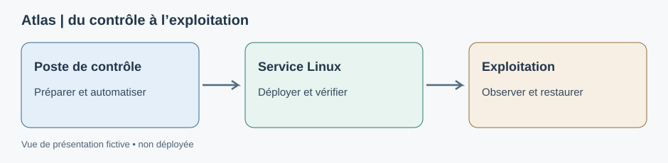

GitHub · README de démonstration
Infrastructure / exploitationAtelier Atlas
Déployer un service Linux reproductible, l’observer et prouver sa reprise.
Comprendre
Une équipe doit livrer un service interne sans configurer chaque serveur manuellement.

Commencer
Identifier le système et les ressources avant toute installation.
# Lecture seule
cat /etc/os-release
df -h
État et preuves
| Réalisation | État |
|---|
| Conception | Proposée |
| Provisionnement | Non exécuté |
| Restauration | Non exécutée |
Aucune preuve de déploiement.
Notion · Wiki de démonstration
Centre de connaissancesAtelier Atlas
Commencer iciComprendre, préparer, pratiquer et mesurer sa progression.
Explorer le wiki
ComprendreContexte et architecture
PréparerInventaire et outils
PratiquerExercices et indices
SuivrePreuves personnelles
RessourcesRunbooks et références
Parcours d’apprentissage
| Étape | Contrôle |
|---|
| 01 Comprendre | À réaliser |
| 02 Préparer | À réaliser |
| 03 Déployer | À réaliser |
Exercice : vérifier son environnement
Identifier la distribution et les ressources avant d'installer.
Indice — à ouvrir après réflexion
Comparer les colonnes de df ; ne pas inventer de sortie.Aucun niveau de compétence attribué.